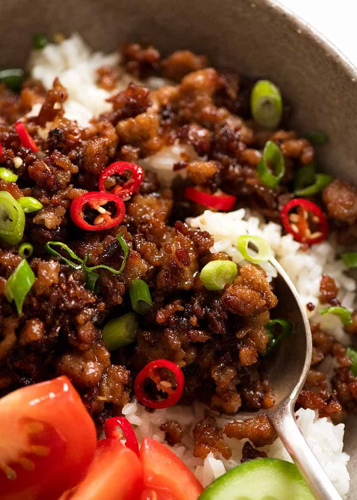

Vietnamese Caramel Pork

Sweet And Savory Pork That Will Leave You Wanting More!
This Vietnamese Pork recipe is an epic Vietnamese food speciality that’s easy to recreate in your own home. Slow cooked tender pork pieces in a sticky savoury-sweet glaze, Vietnamese Caramel Pork is a magical way to transform pork shoulder into something exotic and spectacular. And it’s SO easy!
Ingredients
- 1/2 cup brown sugar
- 1 tbsp water
- 2 lb pork shoulder
- 1 1/2 cup (375 ml) coconut water
- 1 shallot
- 2 garlic cloves
- 1 1/2 tbsp fish sauce
- 1/4 tsp white pepper
- Red chilli and finely sliced green onion for garnish (optional)
Steps
- Place sugar and water in a large pot over medium heat. Stir, then when it bubbles and the sugar is melted (it looks like caramel), add the rest of the ingredients.
- Stir, then adjust the heat so it is simmering fairly energetically. Not rapidly, not a slow simmer (I use medium heat on a weak stove, between medium and low on a strong stove).
- Simmer for 1.5 hours, uncovered. Stir once or twice while cooking.
- At around 1.5 hours, when the liquid has reduced down and the pork is tender, (see Note 3 if pork is not yet tender), the fat will separate.
- Stir and the pork will brown and caramelise in the fat.
- Once the liquid is all gone and it's now stuck on the pork pieces, it's ready.
- Serve over rice, garnished with fresh chilli and shallots. Simple pickled vegetables are ideal for a side because the fresh acidity pairs well with the rich pork.